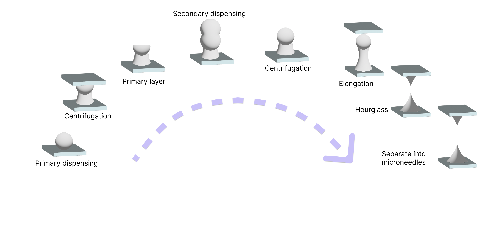
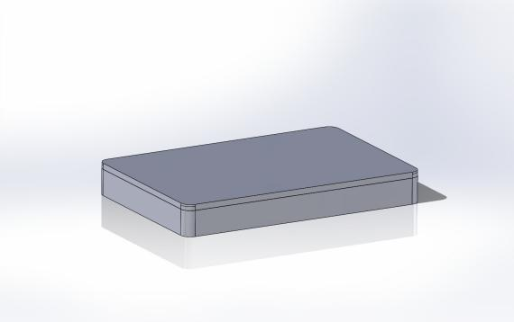
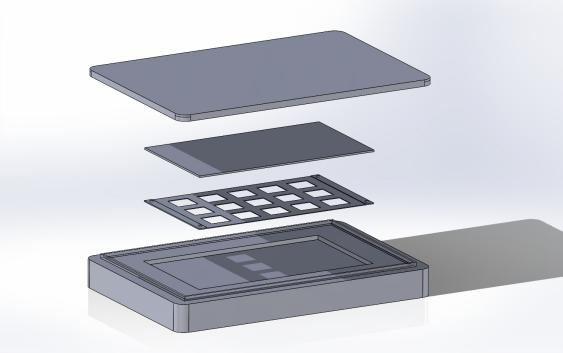
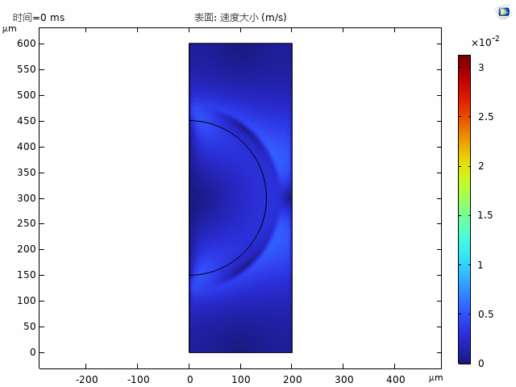
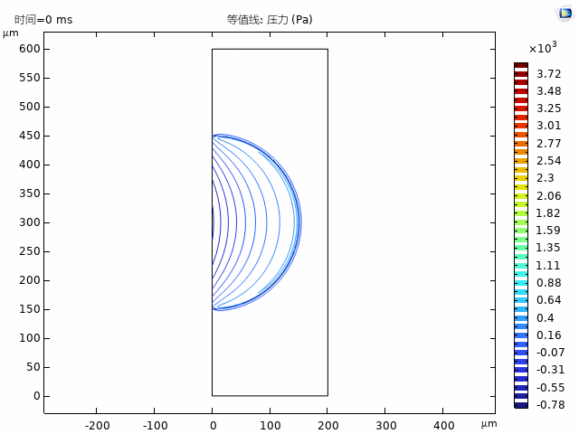
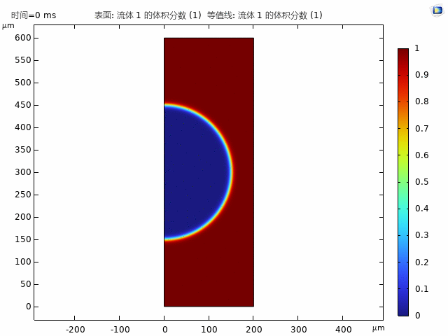
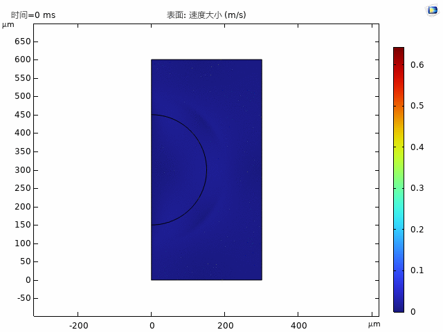
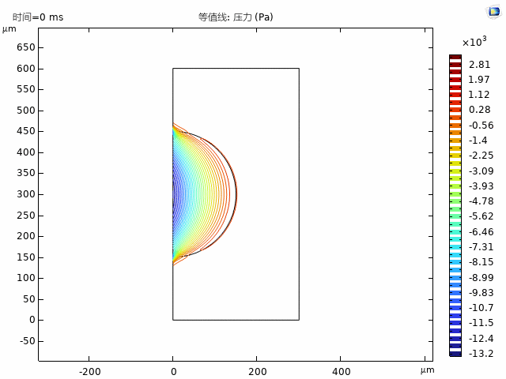
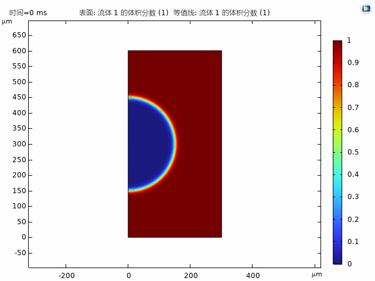
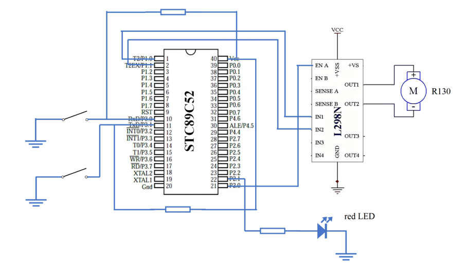

Loading...

Hardware
Background
Our project has developed a novel combination drug, ABTAC and keratinocyte growth factor, for treating seborrheic alopecia. To enhance its delivery, we are exploring transdermal methods, particularly microneedle (MN) technology. MNs create microchannels in the stratum corneum, boosting drug absorption while reducing systemic distribution and side effects. In hair loss treatment, MNs not only improve drug penetration but also physically stimulate hair follicle stem cells, promoting growth. They are also easy to use, cause minimal pain, and are well-tolerated by patients.
Among MN types, dissolvable microneedles (DMNs) are particularly advantageous. Unlike solid or coated MNs, DMNs incorporate drugs directly into the needle matrix, offering higher drug loading and efficient delivery. Made from biocompatible materials, DMNs dissolve completely in the skin, preventing irritation or allergic reactions. By adjusting their material composition and structure, drug release rates can be precisely controlled for sustained or controlled delivery.
Thus, we aim to develop a DMN system for transdermal delivery of ABTAC and keratinocyte growth factor.
Design Overview
The design of soluble microneedles can be divided into three parts:
- The selection of matrix materials
- The design of production methods
- The design of delivery methods
In the second and third part, we developed two kinds of hardware:
Technical Details
Matrix material selection
Considering many factors like biocompatibility, drug loading capacity, and mechanical strength, we finally chose hyaluronic acid (HA) as matrix material. We also used gelatin as a crosslinking agent, which can enhance the stability of HA and realize the slow release of the drug.
Production method
the principle
In order to improve the performance of the micro needle puncture of the skin and enhance the physical interlock between the micro needle and skin, we choose to use the centrifugal lithography (CL) method of production organization interlock micro needle (TI - DMN).
Centrifugal lithography works by shaping a liquid polymer solution into a desired microstructure under centrifugal force. Centrifugal force is able to uniformly stretch and distribute the polymer solution, forming microneedle structures with precise size and shape.

A fixed box
Taking the microplate centrifuge as the basic device for centrifugation, we developed a microneedle molding fixation box that can be placed in a universal microplate centrifuge based on the specifications of the 96-well plate.
| Component | Material | Main size (mm) | Subsize (mm) |
|---|---|---|---|
| Bottom box | PMMA | 128×86×13 | 88×50×2 (groove) 117×76×2 (bump) |
| Lid | PMMA | 128×86×2 | 118×77×2 (groove) 88×50×0.75 (bump) |
| Hole Plate | PMMA | 88×50×0.25 | 50×4×0.2 (hole) |
| Flexible Plate | PVP-K90 | 10×10×0.25 | / |
| Nonstick Plate | PDMS | 88×50×0.8 | / |


From top to bottom, the lid, the non-stick plate, the hole plate, and the bottom box are shown. 10% of PVP-K90 solution drip into the orifice plate, flexible forms after solidification. Then 60% HA mixed with drugs was dropped into each area in 5×5 arrays using an automated desktop dispenser and covered with a non-stick plate, which was 200 μm away from the flexible plate. Centrifugal force (300 g) was applied for 1 min to form a "wine cup" primary layer of the polymer solution. An additional drop of HA polymer solution was added to the primary layer. Centrifugal force (400 g) was applied again for 1 min to form TI-DMN structures with narrow neck, wide body, and sharp tip. Using this method can quickly make a large number of soluble micro needle patch, and because the base material and the substrate material is different, they can be well separated after the needle inserted into the skin.
analogue simulation
Since there are few literatures describing centrifugal lithography, the relevant data of centrifugal force may not be applicable, so we used COMSOL to simulate the process of droplet centrifugal molding to assist the design of microneedles. The centrifugal force is simulated by adding a volume force F=ρ×ω2×r in the direction of the x axis.
The first layer:



The second layer:



Delivery method
The produced microneedle is in the form of patch. Considering the phenomenon of incomplete and uneven patch in manual patch, we designed a microneedle pen to solve these problems.
The microneedle pen has two main functions. One is to puncture the skin more completely and evenly; the other is to bring in the red light irradiation function, which can activate the hair follicle cells, improve the blood circulation of the scalp, and further promote hair growth.
Mechanical part
Circuit part
- Hardware connection:
- Software codes:
The small volume R130 STC89C52 is used to control the R130 motor and a red LED light, and controls the speed of the motor and the red LED light through the PWM (pulse width modulation) signal.

// Code for controlling a motor and light system
#include <reg52.h>
sbit Motor_IN1 = P1^0;
sbit Motor_IN2 = P1^1;
sbit Motor_PWM = P2^0;
sbit Light = P2^1;
sbit Speed_Switch = P3^0;
sbit Light_Switch = P3^1;
unsigned char speed_level = 0;
bit light_state = 0;
// Time-lapse function
void Delay(unsigned int t) {
while (t--) {
unsigned char i;
for (i = 0; i < 1275; i++);
}
}
// Main function
void main() {
Motor_IN1 = 1; // Set the motor to turn forward
Motor_IN2 = 0;
while (1) {
// Read the motor speed control switch status
if (Speed_Switch == 0) {
Delay(20);
if (Speed_Switch == 0) {
speed_level++;
while (Speed_Switch == 0);
Delay(20);
}
}
// Set the motor speed according to the speed level
switch (speed_level) {
case 0:
Motor_PWM = 0;
break;
case 1:
Motor_PWM = 50;
break;
case 2:
Motor_PWM = 100;
break;
case 3:
Motor_PWM = 200;
break;
default:
speed_level = 0;
break;
}
// Read the red light control switch status
if (Light_Switch == 0) {
Delay(20);
if (Light_Switch == 0) {
light_state = !light_state;
while (Light_Switch == 0);
Delay(20);
}
}
// Control the red light according to the red light status
Light = light_state;
Delay(100);
}
}
Through this circuit design, one switch controls the red light on and off, and the other switch can adjust the vibration frequency of the vibration head to meet the individual needs of different users.
Future Work
In the future, the microneedle molding simulation can be combined with the microneedle puncture and drug diffusion simulation to customize the microneedle parameter scheme and production scheme for different people and drugs. Comsol The built-in app development system also helps us to further share the model with more people.
In addition, the shape and material of the vibrating head can be optimized in the design of the microneedling pen to make it more suitable for the scalp and achieve uniform drug delivery in depth. The specific band of red light can also be optimized through experiments, and the light intensity can be adjusted. Furthermore, we also have plans to incorporate tiny sensors into microneedles to aid diagnosis and further treatment by minimally sampling tiny amounts of blood and interstitial fluid.
References
[1] H. Yang, S. Kim, G. Kang, S. F. Lahiji, M. Jang, Y. M. Kim, J.-M. Kim, S.-N. Cho, H. Jung, Adv. Healthcare Mater. 2017, 6, 1700326. https://doi.org/10.1002/adhm.201700326.
[2] Fakhraei Lahiji, S., Kim, Y., Kang, G. et al. Tissue Interlocking Dissolving Microneedles for Accurate and Efficient Transdermal Delivery of Biomolecules. Sci Rep 9, 7886 (2019). https://doi.org/10.1038/s41598-019-44418-6.
[3] Darwin, E., Heyes, A., Hirt, P.A. et al. Low-level laser therapy for the treatment of androgenic alopecia: a review. Lasers Med Sci 33, 425–434 (2018). https://doi.org/10.1007/s10103-017-2385-5.
[4] Can Hong, Guoliang Zhang, Wei Zhang, Jiaqi Liu, Jiao Zhang, Yutong Chen, Haichuan Peng, Yukai Cheng, Xingwei Ding, Hongbo Xin, Xiaolei Wang, Hair grows hair: Dual-effective hair regrowth through a hair enhanced dissolvable microneedle patch cooperated with the pure yellow light irradiation, Applied Materials Today, 25, 101188, (2021). https://doi.org/10.1016/j.apmt.2021.101188.